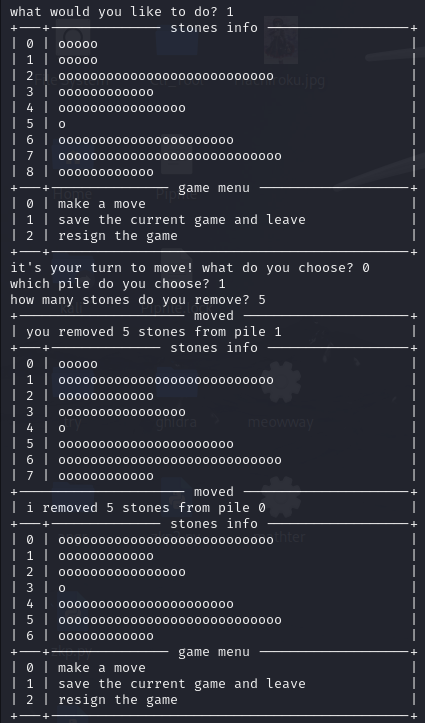
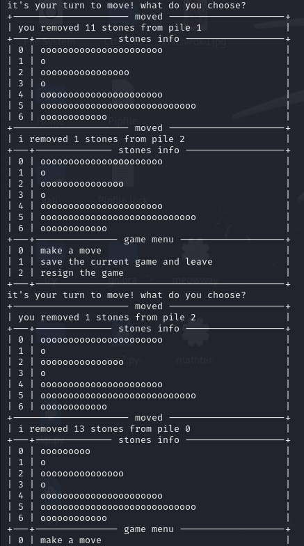
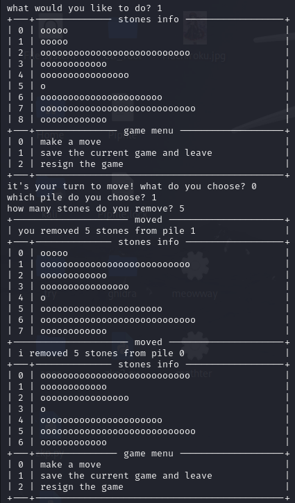
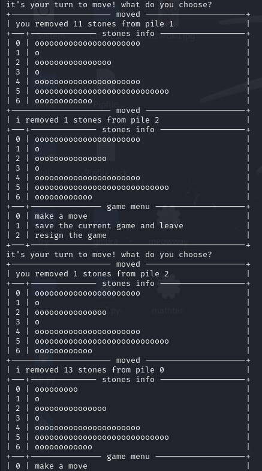

前言
#
這次能打到前五真的覺得很不可思議，感覺今年題目有比較難
雖然我也沒有打過之前的比賽就對了
這次能打到第五名首先要特別感謝努力的自己 ，還有要特別感謝成大資安社還有B33F 50μP戰隊，提供了許多學習資源讓我學習
，不過這次能打到那麼高真的覺得自己只是單純運氣好，比賽的時候想到比較多奇怪的方法，很多題還都是被我硬搓出來的
而且賽後發現很多本來名次在我後面的，在pre-exam的名次都超過我了🛐
建議想看比較正規解的人可以去看看別人的write up，我的真的都比較偏通靈向
廢話夠多了，再來就進入到WriteUp的部分了
Scoreboard
#
先丟上自己的記分板還有賽後超長的記分板


Misc
#
Welcome #
這次的Welcome沒有整活，單純點開題目描述就有了

好歹也把pre-exam改成MFCTF吧
Quantum Nim Heist #

這題當初在MFCTF的時候是想說可能要先去破解他hash加密的部分
然後自己找出把1加密後的結果再拿去讀檔
所以MFCTF的時候想很久也沒有想出來該怎麼做
結果賽後在pre-exam的時候無聊去亂試意外就找到破解的地方了
solve:
如果一開始遊玩時亂輸入的話會顯示錯誤，因此就先正常進行遊戲動個幾步，後面直接按enter就會發現沒有報錯，而且對手也會動下一步
因此再來就是等對手動到剩下最後一排的時候再去收割就好了
 



flag:AIS3{Ar3_y0u_a_N1m_ma57er_0r_a_Crypt0_ma57er?}

Reverse
#
The Long Print #

這邊再特別解釋一下，因為從上面反編譯後可以看到輸出後會再做V4>>=8的動作
因此這邊就是每次察看rsp的末兩位就好了

我一開始是透過gdb來在sleep的地方下斷點，然後直接jump到下一行，結果發現最後拚出來的flag怪怪的

其實這邊這個方法也可以 只是我當時看錯東西
所以又去嘗試透過IDA先找到sleep的地方換成16進制檔案時在哪，再透過010Editor把那部分改成90，也就是不進行任何動作(這部分等等的火拳也會用到，會再詳細介紹)
solve:
兩個方法其實後面要做的事情都差不多，都一樣是丟到gdb裡面，然後再printf的地方下斷點，並查看當時rsp的質，最後再轉成ASCII字元就好了
所以再來就一樣慢慢把flag搓出來

$rsp 的質:
0x3353494100000000
0x756f597b00000000
0x6572615f00000000
0x6568745f00000000
0x73616d5f00000000
0x5f72657400000000
0x745f666f00000000
0x5f656d6900000000
0x616e616d00000000
0x656d656700000000
0x2121746e00000000
0x7d3f212100000000
flag: AIS3{You_are_the_master_of_time_management!!!!?}
火拳のエース #

也沒有到秒解 還是想了很久
solve:
一樣都先透過IDA查看反編譯後的代碼，發現跟之前自己練習angr官方Lab006使用到的觀念都差不多 主要都是把數據存在動態內存再去做混淆題目:


import angr
import claripy
import sys
def main(argv):
path_to_binary = argv[1]
project = angr.Project(path_to_binary)
start_address = 0x08049661
initial_state = project.factory.blank_state(
addr=start_address,
add_options = { angr.options.SYMBOL_FILL_UNCONSTRAINED_MEMORY,
angr.options.SYMBOL_FILL_UNCONSTRAINED_REGISTERS}
)
password0 = claripy.BVS('password0', 64)
password1 = claripy.BVS('password1', 64)
password2 = claripy.BVS('password2', 64)
password3 = claripy.BVS('password3', 64)
fake_heap_address0 = 0xffffc93c
pointer_to_malloc_memory_address0 = 0x090FB2D4
initial_state.memory.store(pointer_to_malloc_memory_address0, fake_heap_address0, endness=project.arch.memory_endness)
fake_heap_address1 = 0xffffc94c
pointer_to_malloc_memory_address1 = 0x090FB2D8
initial_state.memory.store(pointer_to_malloc_memory_address1, fake_heap_address1, endness=project.arch.memory_endness)
fake_heap_address2 = 0xffffc95c
pointer_to_malloc_memory_address2 = 0x090FB2DC
initial_state.memory.store(pointer_to_malloc_memory_address2, fake_heap_address2, endness=project.arch.memory_endness)
fake_heap_address3 = 0xffffc96c
pointer_to_malloc_memory_address3 = 0x090FB2E0
initial_state.memory.store(pointer_to_malloc_memory_address3, fake_heap_address3, endness=project.arch.memory_endness)
initial_state.memory.store(fake_heap_address0, password0)
initial_state.memory.store(fake_heap_address1, password1)
initial_state.memory.store(fake_heap_address2, password2)
initial_state.memory.store(fake_heap_address3, password3)
simulation = project.factory.simgr(initial_state)
def is_successful(state):
stdout_output = state.posix.dumps(sys.stdout.fileno())
return b'Yes! I remember now, this is it!' in stdout_output
def should_abort(state):
stdout_output = state.posix.dumps(sys.stdout.fileno())
return b'It feels slightly wrong, but almost correct...' in stdout_output
simulation.explore(find=is_successful, avoid=should_abort)
if simulation.found:
solution_state = simulation.found[0]
solution0 = solution_state.solver.eval(password0,cast_to=bytes).decode()
solution1 = solution_state.solver.eval(password1,cast_to=bytes).decode()
solution2 = solution_state.solver.eval(password2,cast_to=bytes).decode()
solution3 = solution_state.solver.eval(password3,cast_to=bytes).decode()
print (solution0,solution1,solution2,solution3)
else:
raise Exception('Could not find the solution')
if __name__ == '__main__':
main(sys.argv)
這邊不特別解釋angr的代碼在做什麼
有興趣的話我應該會在下下學期在NISRA上相關課程 敬請期待
接著透過剛剛LongPrint提到的，透過16進制編輯器先把print_flag的部分刪掉，因為這邊我們直接透過strings就可以看到前半部分了


接著就拿腳本去跑一次修改過後的檔案，發現居然錯了

後面想說那不如乾脆把與lab不同的地方(進行xor的部分)也乾脆先刪掉好了，因此重複上述操作，再去跑一次腳本，發現這次就有順利出現結果了！

那接著就是把得到的質丟回去還有xor的檔案，接著透過gdb在進行xor後下斷點，查看xor後的質是多少

那最後flag也是順利被我搓出來了
這題大概是我這次最正規的解法了


flag:AIS3{G0D_D4MN_4N9R_15_5UP3R_P0W3RFU1!!!}
Web
#
Evil Calculator #

solve:
連進去發現是一個計算機，就很普通的計算機接著透過burp suite攔截發送1+1過去時的封包並送到Repeater查看


這邊直接把報錯貼到google去看，了解原來是因為直接read後就已經是數字了，不需要再透過ord去轉

然後就重複這個操作31次 flag就被我搓出來了呢

flag:AIS3{7RiANG13_5NAK3_I5_50_3Vi1}
Crypto
#
babyRSA #

這題也是被我硬搓出來的 我對不起大家
solve:
這邊先查看原代碼，可以發現它應該是對flag的每個字元去做個別加密的，因此最後輸出結果才會有那麼多這邊我想了很久，最後決定！
對string.printable全部做一次加密 然後慢慢把flag對照搓出來 我的方法真的很笨 自己都看不下去的那種
import string
def encrypt(pk, plaintext):
key, n = pk
cipher = [pow(ord(char), key, n) for char in plaintext]
return cipher
public=(64917055846592305247490566318353366999709874684278480849508851204751189365198819392860386504785643859122396657301225094708026391204100352682992979425763157452255909781003406602228716107905797084217189131716198785709124050278116966890968003294485934472496151582084561439957513571043497031319413889856520421733, 115676743153063753482251273007095369919613374531038288437295760314264647231038870203981488393720761532040569270340726478402172283300622527884543078194060647393394510524980830171230330673500741683492143805583694395504141751460090539868114454005046898551218623342425465650881666420408703144859108346202894384649)
flag=string.printable
print(flag)
encrypted_msg = encrypt(public, flag)
for i in range(len(flag)):
print(flag[i],"=",encrypted_msg[i])
我是直接在記事本裡面慢慢用搜尋跟取代把flag搓出來啦，因為那個時候比賽快結束了，也懶得去想程式碼要怎麼寫，所以這邊就直接藉助了工人智慧

而且flag檔案的第一碼還不是A 害我當初困惑超久 所以後面才決定直接把全部都硬搓出來
flag:AIS3{NeverUseTheCryptographyLibraryImplementedYourSelf}
好欸終於寫完了
然後如果發現我上述有錯誤的地方 都歡迎私訊我提醒我改一下
相關問題
#
首先是交通的問題，這次舉辦的地點在救國團劍潭青年活動中心-集賢廳 (台北市中山北路四段16號)
我自己是騎車過去啦，當初一直在想到底有沒有車位，後來其實發現在正門入口就有免費停車場了，而且還滿空的，因此大家可以放心騎車去了
再來是題目數量的部分，這次題目好像有比較多，以往好像都是各類型抓兩題，但這次是變成三題，不確定以後會不會也都是三題
題目總覽